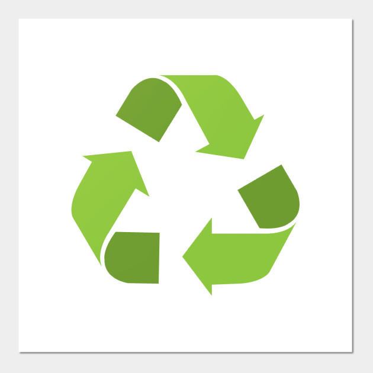

open·control is the only controller available that shows and controls Variations, Scene names, Looper state... along many other unique features.
| Display |
|---|
| Scene Name · Track Name · Marker Name · Variation Number · Looper Number |
| LEDs | |
|---|---|
| Global Actions : Start/Stop · Metronome · Arrangement Rec · Arrangement Loop · Session Rec |
|
| Scene Actions : Selected Scene Color · Prev/Next Scene Color · Unable/Disable Follow Actions |
|
| Track Actions : Selected Track Color · Prev/Next Track Color · Clip Color · Mute · Solo · Arm |
|
| Looper Actions : Prev/Next Looper Track Color · Looper State · Looper Track Arm · Looper Track Mute |
|
| Buttons | |
|---|---|
| Global Actions : Start/Stop · Metronome · Undo · Capture · BPM +1/-1 · Arr / Session View Toggle |
|
| Scene Actions : Launch Scene · Select Next/Prev Scene · Session Record · Insert Scene · Stop All Clips · Unable/Disable Follow Actions |
|
| Track Actions : Launch Clip · Find Empty Slot · Mute · Solo · Arm · Stop · Select Prev/Next Track · Add Audio/MIDI Track |
|
| Arrangement Actions : Arrangement Rec · Arrangement Loop · Go to Prev/Next Marker · Add/Delete Marker · Loop to Next Marker · Punch In / Punch Out · Jump to 1.1.1 |
|
| Variations Actions : Launch, Store or Recall Variations · Randomize Macros · Select Prev/Next Variation · Select Prev/Next Device | |
| Looper Actions : Rec/Play/OVR per Looper · Select Prev/Next Looper · Clear 1 · Clear All · Arm/Mute Looper Track · 6 MIDI-Mapable buttons per Looper |
|
| Knobs |
|---|
| Global : Last Selected Parameter · Global Groove Amount |
| Selected Track : Send A · Send B · Selected Device Parameters 1 & 2 · Device 1 Parameters 1 & 2 · Looper Device 1 Parameters 1 & 2 |
open·control is Open Source, therefore the code can be adapted to fit specific needs.
You can find examples of setups in the Ressources section

A 3D printed cover for the Pocket board is available.
This cover is made of recycled bottles of water. It is designed and produced by Bruno Tognin.

You can also print it yourself, you can find the files in the Ressources page.
 To help make the planet a bit greener, no cables are provided with open.control.
The USB cable is a standard one (Printer type)